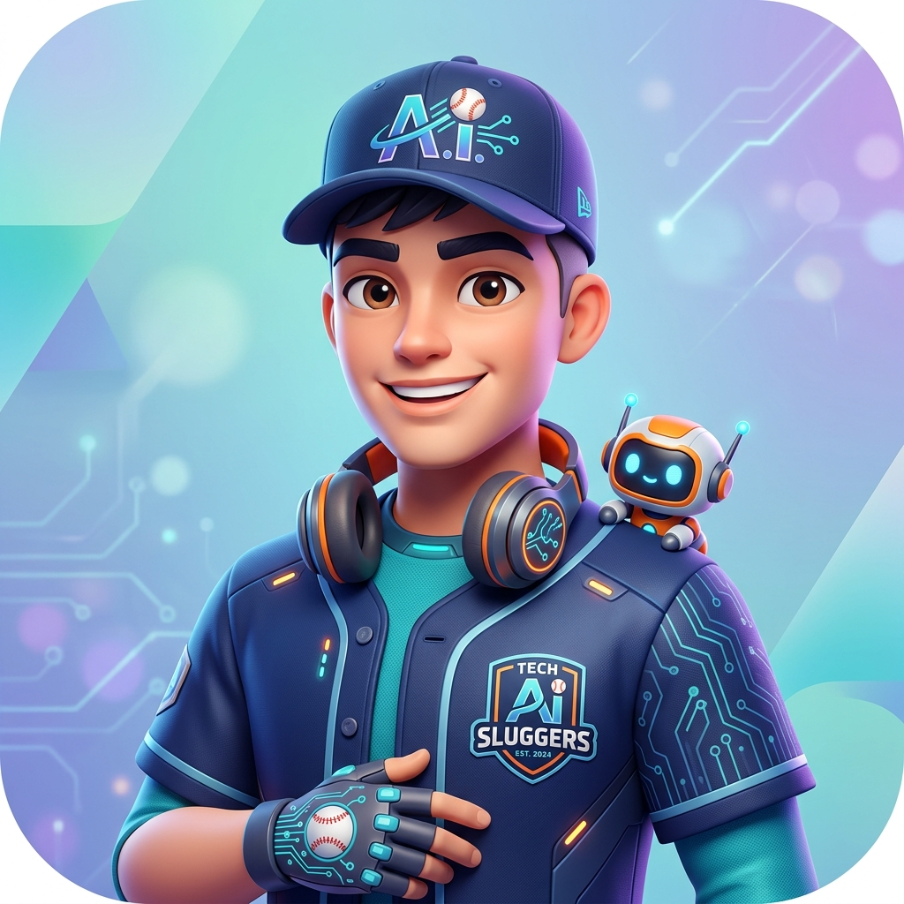

Hello, I'm
菅原 (SR)
Baseball Lover & Tech Enthusiast

自己紹介
得意なこと
野球
興味があること
ロボットやAIを使った
ものづくり
AIとの向き合い方
Q. 自分にとってAIはどういう存在か？
考えを広げたり、わからないことを学ぶ手助けをしてくれる身近なサポーターのような存在です。
Q. 今後AIとどう向き合いたいか？
単に便利に使うだけでなく、自分で工夫しながら活用し、学習やものづくりに役立てられるように向き合っていきたいと考えています。
この授業での挑戦
アプリを作る
AIを使って日常生活に役立つシンプルなアプリを作ってみたいです。
仕組みを知る
AIがどのような仕組みで動いているのかや、どんな場面で活用できるのかを調べてみたいです。